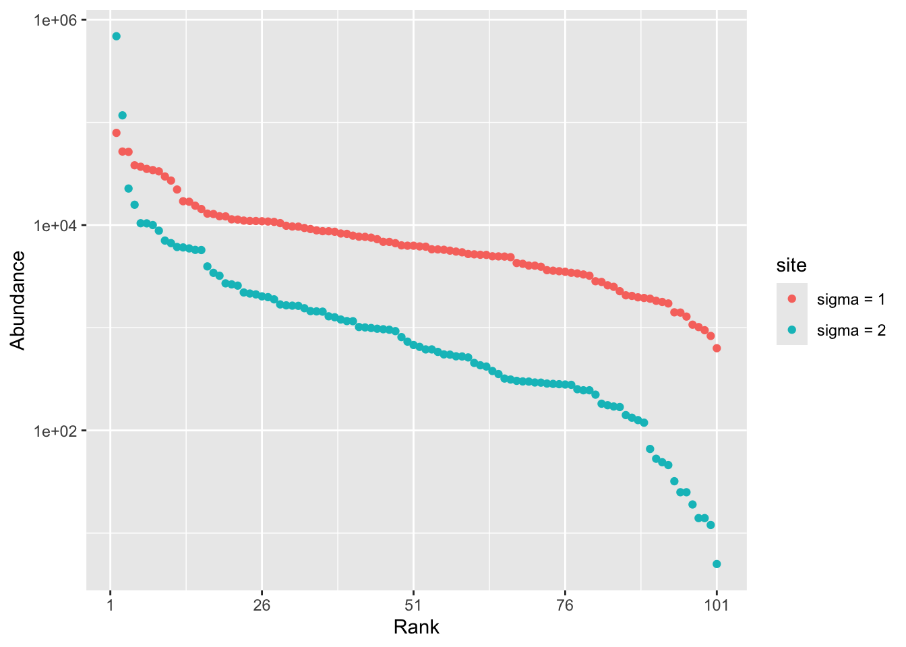
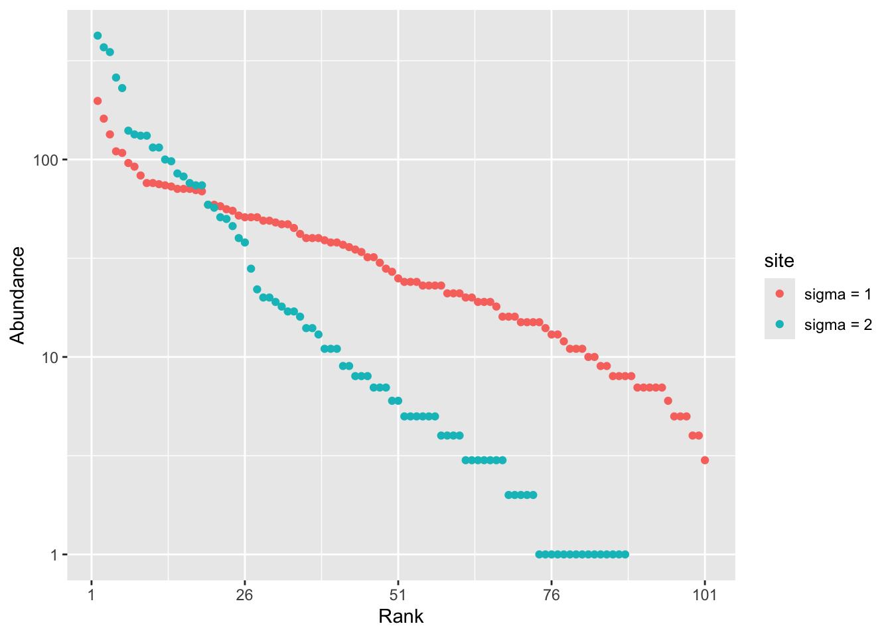
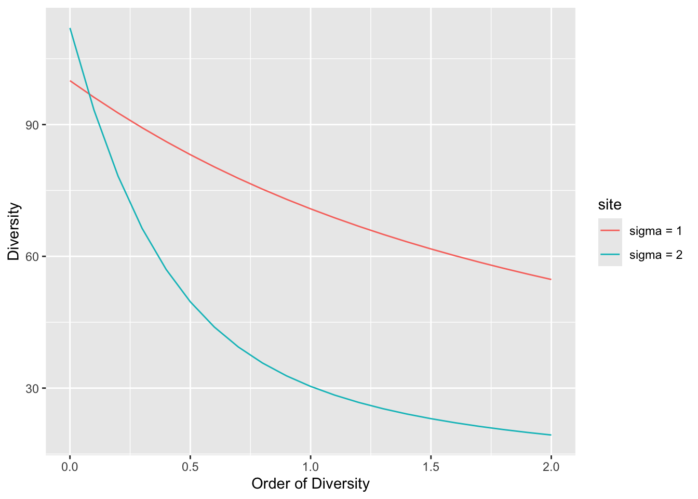
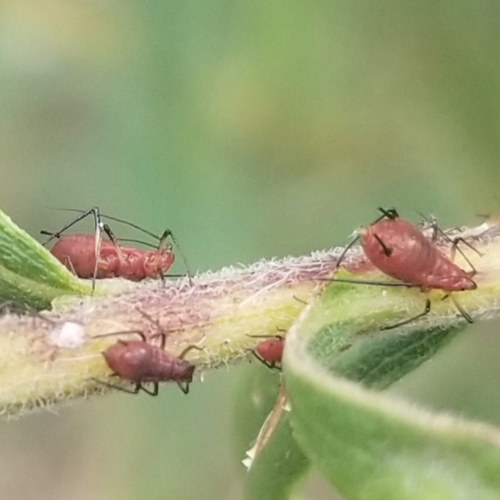
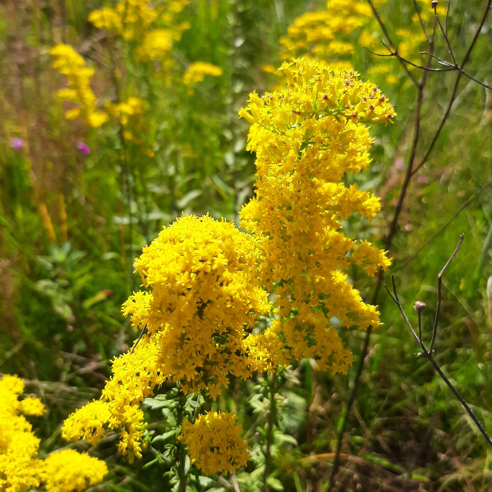
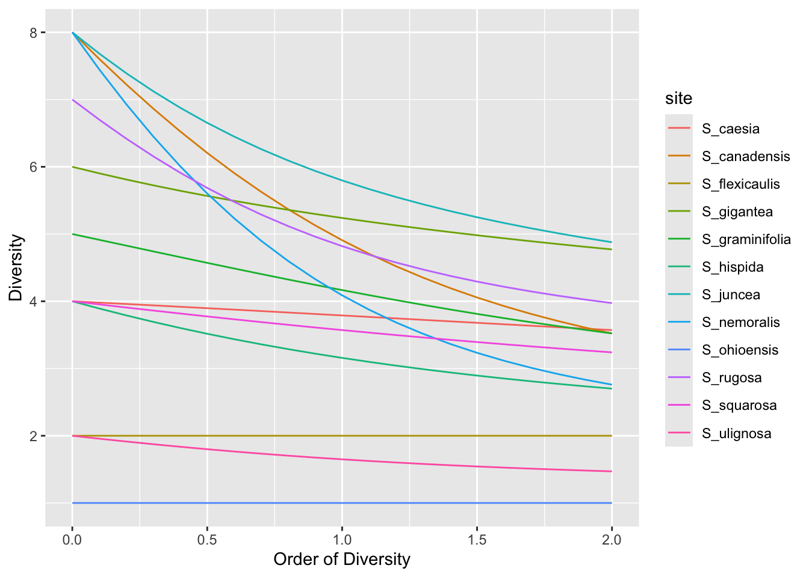

Sj1A = 100 + 20 #because Sobs/(Sobs+S1) = 100/120 > 74%
Sj2B = 80 + 30*2 - 20 #because Sobs/(Sobs+S1) = 80/110 < 74% so we use J2
#For C, part of singletons is way above 1/3, J1 and J2 underestimate completely, even J3 underestimate but it gives that:
Sj3C = 150 + 3*110 - 3*30 + 10 #the asymptotique richness of C is likely more than 400Species Diversity and Distributions
1 Instructions
1.1 English
First choose your language and delete the section of the document in the other language.
Answer the questions precisely but briefly: the questions are detailed to guide you so there are many of them. Don’t waste your time repeating the course: you have all documents with you, copying their content is not valuable. To answer factual questions, you don’t need to make sentences: e.g., just write “4.” to answer the question “how much are 2 + 2?”.
Before you begin:
- Type your name in the header of the document, in the author field.
- Run the following in the terminal (answer No if a message box asks you if you want to close some files):
quarto publish gh-pages index.qmd
During your work: render the document regularly (at the end of each question, for example) so that problems do not pile up.
At the end of the exam: save the file, make a commit and push the project to GitHub. Do not modify the project after the exam has finished.
2 English
2.1 Estimating the number of species
You have three inventories of 10-hectare areas of forest (approximately 5,000 trees):
- A: 100 species, including 20 singletons (\(S_1\)), 10 doubletons (\(S_2\)) and 3 tripletons (\(S_3\)),
- B: 80 species, including 30 singletons, 20 doubletons and 5 tripletons,
- C: 150 species, including 110 singletons, 30 doubletons and 10 tripletons.
Reminder of the estimator formulas, using the notation from the course:
- \(S_{J1} = S_{>0} + S_1\)
- \(S_{J2} = S_{>0} + 2 S_1 - S_2\)
- \(S_{J3} = S_{>0} + 3 S_1 - 3 S_2 + S_3\)
Quickly estimate the asymptotic richness of the forest using the jackknife estimators and the rules of Brose et al. (2003).
2.2 Phylogenetic diversity
The following function creates a phylogenetic tree with 3 species. The parameter h sets the height at which species A and B diverge.
tree_3sp <- function(h) {
NewickABC <- paste0("(C:1,(A:", 1 - h, ",B:", 1 - h, "):", h, ");")
phyloABC <- ape::read.tree(text = NewickABC)
plot(phyloABC, direction = "downwards", srt = 90)
axis(2)
}
# Create a tree
tree_3sp(0.5)
What is the order-0 phylogenetic diversity (Faith’s PD) of a community containing the three species, whose phylogenetic tree is shown in the figure?
What is the possible range of values for
h?
What effect does
hhave on the value of PD?
Express the value of PD in terms of
h.
What is the richness (taxonomic, not phylogenetic) of the community? Explain how \(h\) allows us to take into account the closeness between species B and A.
If botanists disagree on whether species B and A are synonymous and a phylogeny shows that their distance \(h\) is small, suggest a method to help them reach agreement.
#Q1)
#Faith's PD is the sum of the length of all branches
pd = 3 - 0.5 #1 + h + 2*(1-h) = 3 - h and h=0.5 (that is D0, effective number of species)
#Q2)
# 0 ≤ h ≤ 1
#if h = 0 => three branches of lenght 1 (3 effectives species)
#if h = 1 => two branches of 1 (2effectives species)
#Q3)
#PD decreases linearly when h increases
#Q4)
#PD = 3 - h
#Q5)
#The taxonomic richness is 3. h allow us to take into account their evolutive history and so how close they are to each other.
#Q6)
#If h is small, then the species are very distincts and we can say that the effective number of expecies ~ 3.2.3 Lognormal distribution
We draw two random distributions from a lognormal distribution. Their size and species richness are identical; only the standard deviation of the distribution varies.
library("tidyverse")── Attaching core tidyverse packages ──────────────────────── tidyverse 2.0.0 ──
✔ dplyr 1.2.1 ✔ readr 2.2.0
✔ forcats 1.0.1 ✔ stringr 1.6.0
✔ ggplot2 4.0.3 ✔ tibble 3.3.1
✔ lubridate 1.9.5 ✔ tidyr 1.3.2
✔ purrr 1.2.2
── Conflicts ────────────────────────────────────────── tidyverse_conflicts() ──
✖ dplyr::filter() masks stats::filter()
✖ dplyr::lag() masks stats::lag()
ℹ Use the conflicted package (<http://conflicted.r-lib.org/>) to force all conflicts to become errorslibrary("divent")Loading required package: Rcpp# Set the random seed for reproducibility
set.seed(973)
# Size and richness
the_size <- 1E6
the_richness <- 100
# Draw the first community
rcommunity( 1,
size = the_size,
species_number = the_richness,
distribution = "lnorm",
sd_lnorm = 1
) %>%
# Give it a name
mutate(site = "sigma = 1") %>%
# Bind the second community data into the same tibble
bind_rows(
# Draw the second community
rcommunity(
1,
size = the_size,
species_number = the_richness,
distribution = "lnorm",
sd_lnorm = 2
) %>%
# Give it a name
mutate(site = "sigma = 2")
) ->
# Store the result
comm_lnorm
# Whittaker plot
autoplot(comm_lnorm)
What is the species richness of the observed communities?
What is the abundance of the rarest species (approximately, as read from the plot) compared to the total number of trees?
What do we observe for a sample of reasonable size, say 6.25 ha with 600 trees per hectare? Draw the figure. Be careful not to overwrite the
comm_lnormvariable when reusing the code.
Plot the diversity profile of the two communities
Which community is the most diverse? Explain this in relation to the value of \(\sigma\).
#Q1)
#Species richness is 100.
#Q2)
#For sigma = 1 : rarest species is 10^3 individuals
#For sigma = 2 : rarest species is ~10 individuals
#bigger sigma means bigger gap between most abundant and most rare species
#Q3)
the_size_sample <- 6.25 * 600 # 3750 arbres
rcommunity(1, size = the_size_sample,
species_number = the_richness,
distribution = "lnorm",
sd_lnorm = 1) %>%
mutate(site = "sigma = 1") %>%
bind_rows(
rcommunity(1, size = the_size_sample,
species_number = the_richness,
distribution = "lnorm",
sd_lnorm = 2) %>%
mutate(site = "sigma = 2")
) -> comm_lnorm_sample
autoplot(comm_lnorm_sample)
#for sigma =1, all species are there (richness of 100)
#for sigma = 2, more rare species and a lot of singletons, richness < 100
#Q4)
profile_hill(comm_lnorm_sample) %>%
autoplot()
# sigma = 1 is the most diverse because the diversity profil is higher or very close (for q=0) than for sigma = 2. Because when sigma increases, some species dominate and thare are more rare species. And where the order of diversity increases, rare species count less thant abundant one and so diversity will be higher with sigma = 1.2.4 Pielou (1972)
The aim of this final section is to revisit and modernise the results of Pielou (1972). The data consist of abundance records for aphids of the genus Dactynotus on plants of the genus Solidago (Asteraceae), considered as their potential habitats. The diversity of each Solidago species is defined as the diversity of the aphid species it hosts.
 |
 |
2.4.1 Data
We will first assess the diversity of aphids in their various habitats.
The data are contained in the file Pielou1972.csv.
# Read the file
read_csv('data/Pielou1972.csv') %>%
# Replace missing values with zeros
mutate(across(everything(), ~ replace_na(.x, 0))) %>%
# Create an abundances object
as_abundances() %>%
# Set equal weights
mutate(weight = 1) ->
pielou_1972Rows: 12 Columns: 11
── Column specification ────────────────────────────────────────────────────────
Delimiter: ","
chr (1): site
dbl (10): D_nigrotuberculatus, D_nigrotibius, D_caligatus, D_pieloui, D_cana...
ℹ Use `spec()` to retrieve the full column specification for this data.
ℹ Specify the column types or set `show_col_types = FALSE` to quiet this message.# Display it
pielou_1972# A tibble: 12 × 12
site weight D_nigrotuberculatus D_nigrotibius D_caligatus D_pieloui
<chr> <dbl> <dbl> <dbl> <dbl> <dbl>
1 S_canadensis 1 55 9 24 8
2 S_nemoralis 1 11 39 6 1
3 S_rugosa 1 19 4 22 11
4 S_juncea 1 13 5 1 9
5 S_gigantea 1 5 3 4 8
6 S_hispida 1 1 3 0 9
7 S_squarosa 1 2 0 0 4
8 S_graminifolia 1 1 0 1 4
9 S_caesia 1 1 2 0 1
10 S_ulignosa 1 0 4 0 1
11 S_flexicaulis 1 0 1 0 0
12 S_ohioensis 1 0 0 0 0
# ℹ 6 more variables: D_canadensis <dbl>, D_gravicornis <dbl>,
# D_lanceolatus <dbl>, D_macgillivrayae <dbl>, D_erigeronensis <dbl>,
# D_solirostratus <dbl>How many species of aphids are there?
How many different plants are there?
#Q1) There are 10 species of aphids
#Q2) There are 12 different plantsGiven the experimental protocol (all species studied are in the data; there are no unobserved species), diversity will always be calculated at the sample level: the argument estimator = "naive" will be used systematically.
2.4.2 Aphid diversity
Count the number of aphid species on each plant.
What is the maximum species richness?
Calculate Simpson’s diversity (not entropy).
Which plant is the most diverse according to Simpson’s measure?
Plot the diversity profiles of all Solidago species.
Which plant appears to be the most diverse, regardless of the order of diversity?
Check whether the curves intersect for \(q>2\).
Two profiles are flat. Explain why.
Partition the diversity. Summarise this partitioning in one or a few sentences. Caution: because of a bug in the published version of package divent, you can’t use argument
estimator = "naive"in thediv_part()function. Partition the asymptotic diversity with its default estimator.
#Q1)
div_richness(pielou_1972, estimator = "naive")# A tibble: 12 × 5
site weight estimator order diversity
<chr> <dbl> <chr> <dbl> <dbl>
1 S_canadensis 1 naive 0 8
2 S_nemoralis 1 naive 0 8
3 S_rugosa 1 naive 0 7
4 S_juncea 1 naive 0 8
5 S_gigantea 1 naive 0 6
6 S_hispida 1 naive 0 4
7 S_squarosa 1 naive 0 4
8 S_graminifolia 1 naive 0 5
9 S_caesia 1 naive 0 4
10 S_ulignosa 1 naive 0 2
11 S_flexicaulis 1 naive 0 2
12 S_ohioensis 1 Single Species 0 1#Q2) The maximum spcies richness is 8.
#Q3)
div_hill(pielou_1972, q = 2, estimator = "naive")# A tibble: 12 × 5
site weight estimator order diversity
<chr> <dbl> <chr> <dbl> <dbl>
1 S_canadensis 1 naive 2 3.52
2 S_nemoralis 1 naive 2 2.76
3 S_rugosa 1 naive 2 3.97
4 S_juncea 1 naive 2 4.88
5 S_gigantea 1 naive 2 4.77
6 S_hispida 1 naive 2 2.70
7 S_squarosa 1 naive 2 3.24
8 S_graminifolia 1 naive 2 3.52
9 S_caesia 1 naive 2 3.57
10 S_ulignosa 1 naive 2 1.47
11 S_flexicaulis 1 naive 2 2
12 S_ohioensis 1 Single Species 2 1 #Q4) S_juncea is the most diverse according to Simpson.
#Q5)
profile_hill(pielou_1972, estimator = "naive") %>%
autoplot()
#Q6)
#Regardless of the order of diversity, it is S_juncea that appears to be the most diverse.
#Q7) yes the curve interesect for q > 2
#Q8) Because their diversity stays the same no matter the order of diversity. They have the same number of effective species no matter the order.
#Q9)
div_part(pielou_1972, q = 1)! Sample coverage is 0, most estimators will return `NaN`.
! Sample coverage is 0, most estimators will return `NaN`.# A tibble: 15 × 6
site scale estimator order diversity weight
<chr> <chr> <chr> <dbl> <dbl> <dbl>
1 Metacommunity gamma "UnveilJ" 1 6.44 12
2 Metacommunity beta "" 1 1.72 NA
3 Metacommunity alpha "" 1 3.75 NA
4 S_canadensis community "UnveilJ" 1 4.91 1
5 S_nemoralis community "UnveilJ" 1 4.44 1
6 S_rugosa community "UnveilJ" 1 4.82 1
7 S_juncea community "UnveilJ" 1 7.37 1
8 S_gigantea community "UnveilJ" 1 5.80 1
9 S_hispida community "UnveilJ" 1 3.16 1
10 S_squarosa community "UnveilJ" 1 4.07 1
11 S_graminifolia community "UnveilJ" 1 6.12 1
12 S_caesia community "UnveilJ" 1 6.59 1
13 S_ulignosa community "UnveilJ" 1 1.65 1
14 S_flexicaulis community "UnveilJ" 1 2 1
15 S_ohioensis community "Single Species" 1 1 1# Gamma diversity (6.43) is partitioned into within plant diversity (alpha = 3.74) and between plant diversity (beta = 1.71). So we have 1.71 effective communities of 3.74 effective number of species, with a total of 6.43 effective species. 2.4.3 Niche width
Moving forward, we will follow Pielou’s approach by studying the diversity of habitats occupied by each aphid species. From this point onwards, you can no longer simply apply the course content; instead, you must extend the concepts you are familiar with to a new approach.
Given that each Solidago constitutes a distinct habitat for an aphid species, the number of habitats occupied serves as a proxy for the size of its niche. A generalist aphid will occupy more habitats (in other words, have a broader niche) than a specialist aphid. The niche breadth of each aphid species is therefore initially defined by the number of different habitats it occupies.
The data must be organised differently, with aphid species in rows and habitats in columns, which requires converting it to a data matrix and transposing it. As the code is rather laborious, it is provided below.
# Read the file
read_csv('data/Pielou1972.csv') %>%
# Replace missing values with zeros
mutate(across(everything(), ~ replace_na(.x, 0))) ->
pielou_rawRows: 12 Columns: 11
── Column specification ────────────────────────────────────────────────────────
Delimiter: ","
chr (1): site
dbl (10): D_nigrotuberculatus, D_nigrotibius, D_caligatus, D_pieloui, D_cana...
ℹ Use `spec()` to retrieve the full column specification for this data.
ℹ Specify the column types or set `show_col_types = FALSE` to quiet this message.# Save the names of the Soledagos
pielou_raw %>%
pull(site) ->
pielou_habitats
# Create a matrix
pielou_raw %>%
# Remove the 'site' column
select(-site) %>%
# Convert to a matrix
as.matrix() %>%
# Transpose the matrix
t() ->
pielou_niches.matrix
# Add the column names
colnames(pielou_niches.matrix) <- pielou_habitats
pielou_niches.matrix %>%
# Create an abundances object
as_abundances() %>%
# Set equal weights
mutate(weight = 1) ->
pielou_niches
# Display it
pielou_niches# A tibble: 10 × 14
site weight S_canadensis S_nemoralis S_rugosa S_juncea S_gigantea S_hispida
<chr> <dbl> <dbl> <dbl> <dbl> <dbl> <dbl> <dbl>
1 D_nig… 1 55 11 19 13 5 1
2 D_nig… 1 9 39 4 5 3 3
3 D_cal… 1 24 6 22 1 4 0
4 D_pie… 1 8 1 11 9 8 9
5 D_can… 1 8 5 2 5 0 4
6 D_gra… 1 8 4 2 5 4 0
7 D_lan… 1 3 2 3 1 1 0
8 D_mac… 1 0 1 0 1 0 0
9 D_eri… 1 2 0 0 0 0 0
10 D_sol… 1 0 0 0 0 0 0
# ℹ 6 more variables: S_squarosa <dbl>, S_graminifolia <dbl>, S_caesia <dbl>,
# S_ulignosa <dbl>, S_flexicaulis <dbl>, S_ohioensis <dbl>The number of habitats occupied by each aphid species can be counted using the usual diversity calculation functions, applied to this unusual dataset:
Which aphid species is the most generalist? What proportion of habitats does it occupy?
Which species is the most specialist?
The diversity of occupied habitats can take abundance into account.
Plot the aphid diversity profiles and establish the link between the actual number of Soledago plants and niche width.
Pielou focuses solely on Shannon entropy in her article, using an archaic form known as the Brillouin formula, which makes the article very difficult to read. Levins (1968) was the first to propose measuring niche width in this way, suggesting two metrics: \(-\sum_i{p_i \log(p_i)}\) and \(\sum_i{\frac{1}{p_i^2}}\), where \(p_i\) is the probability that an aphid is found in habitat \(i\). Identify these two metrics.
#Q1)
div_richness(pielou_niches, estimator = "naive")# A tibble: 10 × 5
site weight estimator order diversity
<chr> <dbl> <chr> <dbl> <dbl>
1 D_nigrotuberculatus 1 naive 0 9
2 D_nigrotibius 1 naive 0 9
3 D_caligatus 1 naive 0 6
4 D_pieloui 1 naive 0 10
5 D_canadensis 1 naive 0 6
6 D_gravicornis 1 naive 0 6
7 D_lanceolatus 1 naive 0 7
8 D_macgillivrayae 1 naive 0 3
9 D_erigeronensis 1 naive 0 2
10 D_solirostratus 1 Single Species 0 1# the most generalist is D_pieloui, it occupies 10/12 habitat so 83%
# the most specialist is D_solirostratus, it occupies 1/12 habitats so 8%
#Q2)
profile_hill(pielou_niches, estimator = "naive") %>%
autoplot()
# The niche width depends on the number of available habitats (12 Solidago species) and the distribution of aphid abundances among the habitats they are in. A generalist species occupies many habitats, whereas a specialist occupies only a few. The effective niche width also depends on how evenly individuals are distributed among these habitats.
#Q3) the first metrics is Shannon entropy.
# The second is Simpson entropy ?2.4.4 Niche overlap
Pielou wants to assess niche overlap in addition to niche width. The reasoning is clearer using Hill’s numbers. If the niches do not overlap at all, there is only one species per habitat, provided, of course, that there are fewer species than habitats. Conversely, if all species are completely generalist, the number of species per habitat equals the total number of species.
What measure reflects niche overlap? Give its value for \(q = 1\).
# we want the effective number of aphid per habitat,
div_part(pielou_niches, q = 1)# A tibble: 13 × 6
site scale estimator order diversity weight
<chr> <chr> <chr> <dbl> <dbl> <dbl>
1 Metacommunity gamma "UnveilJ" 1 6.80 10
2 Metacommunity beta "" 1 1.52 NA
3 Metacommunity alpha "" 1 4.47 NA
4 D_nigrotuberculatus community "UnveilJ" 1 4.80 1
5 D_nigrotibius community "UnveilJ" 1 4.90 1
6 D_caligatus community "UnveilJ" 1 4.00 1
7 D_pieloui community "UnveilJ" 1 9.50 1
8 D_canadensis community "UnveilJ" 1 5.36 1
9 D_gravicornis community "UnveilJ" 1 5.64 1
10 D_lanceolatus community "UnveilJ" 1 9.17 1
11 D_macgillivrayae community "UnveilJ" 1 4.78 1
12 D_erigeronensis community "UnveilJ" 1 2.67 1
13 D_solirostratus community "Single Species" 1 1 1#so we need to look at alpha diversity because it is the effective number of aphid species appearing in same habitat (???)
#so here niche overlap is approximately 4.46 species of aphid per habitat
# not sure at all maybe it is beta diversity ?References
Brose, Ulrich, Neo D. Martinez, and Richard J. Williams. 2003. “Estimating Species Richness: Sensitivity to Sample Coverage and Insensitivity to Spatial Patterns.” Ecology 84 (9): 2364–77. https://doi.org/10.1890/02-0558.
Levins, Richard. 1968. Evolution in Changing Environments: Some Theoretical Explorations. Princeton University Press.
Pielou, Evelyn C. 1972. “Niche Width and Niche Overlap: A Method for Measuring Them.” Ecology 53 (4): 687–92. https://doi.org/10.2307/1934784.